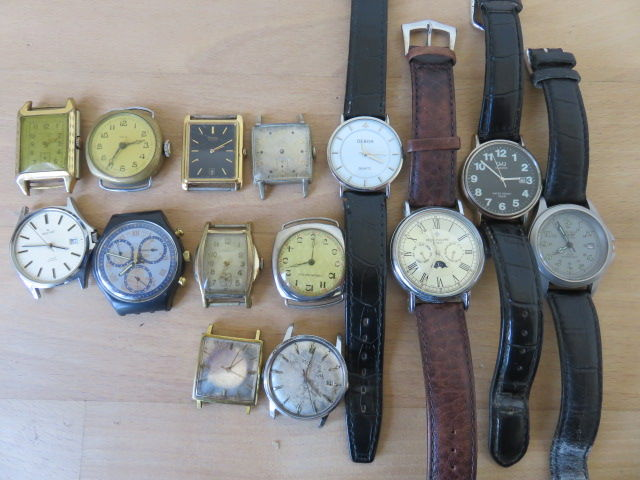
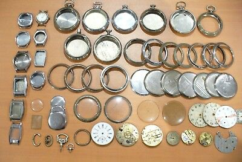
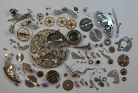

Accueil
Services
à propos
Contact
$
Restauration



ne jeter pas vôs bien, Olivier récupère pièces détaché et objets déféctueux pour leurs restaurations
voici quelques exemples de ce que Olivier récupère.